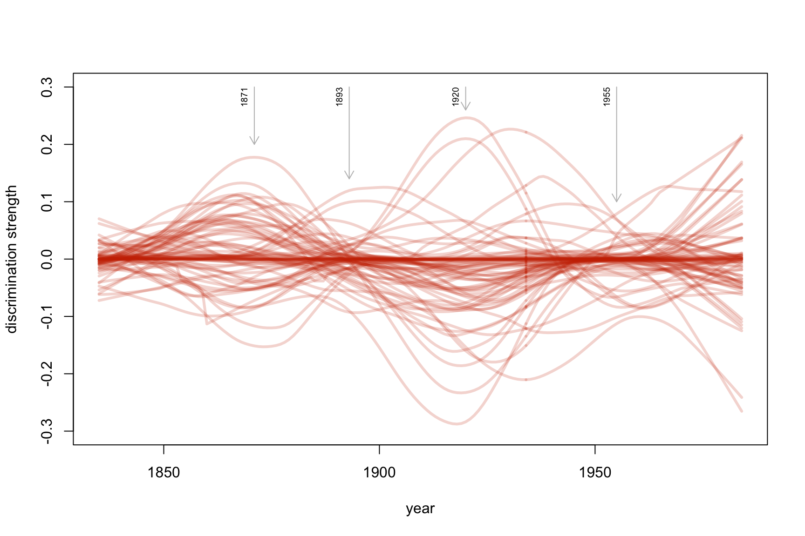

Visualizing the Dynamics of Linguistic Changes
Maciej Eder, Rafał L. Górski
Institute of Polish Language (Polish Academy of Sciences)
Qualico 2018, Wrocław, 6th July 2018
Aim of the study
- Introducing a method to trace changes in language
- No a priori assumptions as to the change-makers
- Identifying the impactful words over time
- Application on the Corpus of Historical American English (COHA)
Langauge change
- There’s no clear definition of language change
- A more feasible approach: tracing changes in language.
- Any two text compared exhibit differences (e.g. in word frequencies), the same applies to any two samples of a language.
- A provisional definition: a language change is an accumulative effect of significant changes in a language.
The dynamics of language change
- Purely linear trends – not very probable.
- Rather, epochs of substantial stylistic drift follow periods of stagnation.
- The goal: observing the accelleration of language change.
What is responsible for a change?
- A relatively small number of words that reflect changes in societies?
- (e.g. horse > automobile > car)
- A aggregation of numerous features of individually weak discrimination power?
- (e.g. the signal of authorship)
Data and methods
- Corpus of American Historical English (COHA)
- ca. 400 million words
- different genres (fic, mag, news, nf)
- covering the years 1810-2009
- A supervised classification
- Nearest Shrunken Centroids classifier
- 1,000 most frequent words
Procedure

Procedure

Procedure

Procedure

Procedure

Procedure

Procedure

Why does the change periodically accelerate?
- A naive assumption that the change can be linked to particular events in history and/or culture.
- However, the impact of major historical breakthroughs on language cannot be ruled out.
Who’s responsible for the change?
Distinctive features

Distinctive features: the biggest variation

So, which words are they?
## [1] "the" "and" "week" "that" "'s"
## [6] "last" "is" "be" "of" "it"
## [11] "we" "i" "to" "was" "mr."
## [16] "our" "my" "been" "not" "u.s."
## [21] "you" "new" "upon" "there" "has"
## [26] "says" "war" "york" "this" "n't"
## [31] "will" "s" "which" "for" "had"
## [36] "very" "have" "said" "are" "in"
## [41] "city" "made" "me" "a" "president"
## [46] "her" "us" "she" "his" "by"
## [51] "united" "or" "at" "but" "q!"
## [56] "party" "committee" "your" "so" "as"
## [61] "street" "today" "men" "would" "with"
## [66] "about" "heart" "do" "any" "'d"
## [71] "out" "all" "if" "great" "army"
## [76] "up"
Words that matter

Words that matter

Words that matter

So, which words made history?
Words cannot simply “disappear”
Personal pronouns (“social” words)

Conclusions
- The language change seems to be a fluctuation of rapid and slow changes.
- Numerous features responsible for the change, rather than few strong predictors.
- unexpectedly many pronouns among the predictors
- increasing power of “social” function words (personal pronouns)
- Grand question: do we observe a language change, or a change in style? (e.g. a general taste of an epoch)
Thank you!
This research is part of project UMO-2013/11/B/HS2/02795, supported by Poland’s National Science Centre.